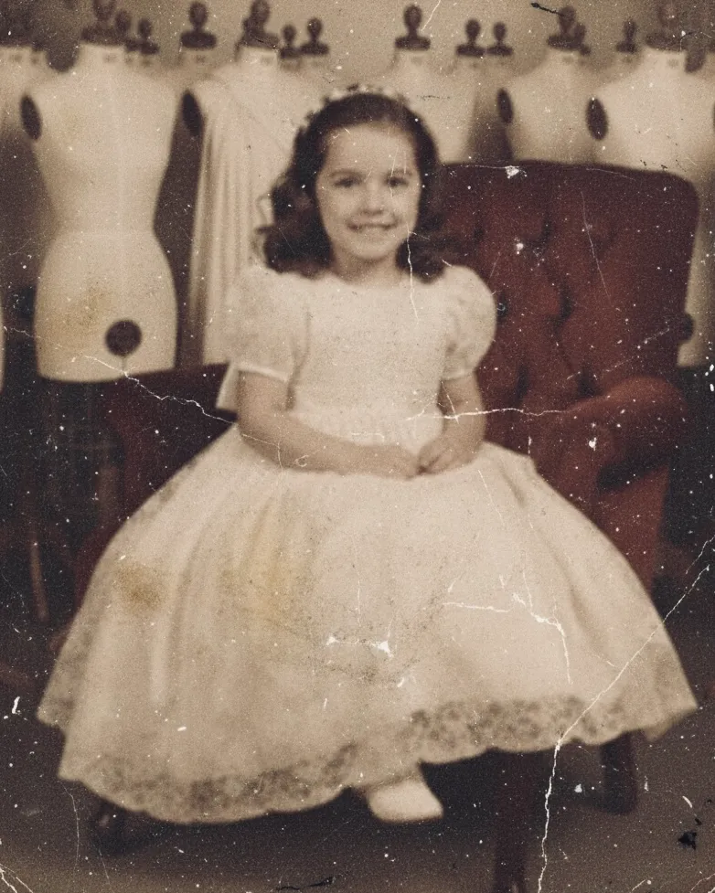
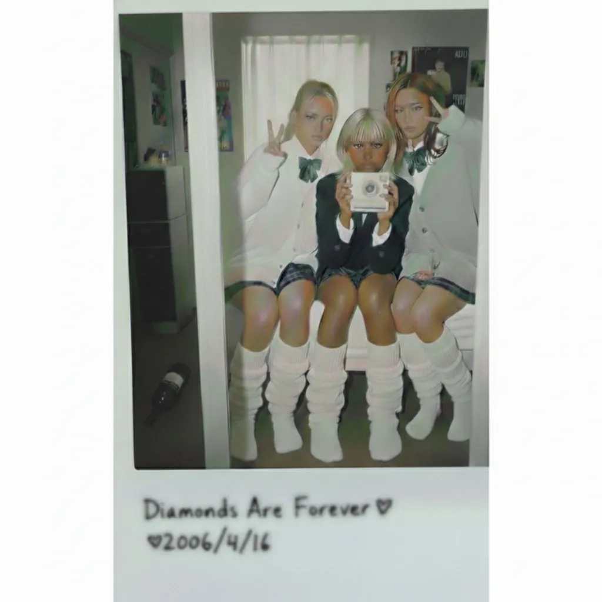

幼少期と家族

幼少期は母方の裕福な祖父母のもとで育つ。祖父は画廊を経営し、祖母は洋裁を趣味としており、幼い頃は祖母の仕立てた服を身にまとうことを楽しんだ。その環境もあり、早くからファッションやアートに関心を持った。姉がピアノとクラシックバレエを習っていたため一時的に同じ教室に通ったが、すぐに辞めた。
祖父に連れられて美術館を訪れると、祖父が館長と談話している間、持参したスケッチブックとクレヨンで展示作品を模写した。気に入らない部分には作品そのものに落書きを加え、形や色を変えて手を入めることもあった。
学生時代と反発心

高校時代は美術部に所属し、同級生部員3人と協力してグループ展を企画・実施したが、学校への事前連絡を行わず外部で展示したことが問題となり退部。退部後は学校の規則や慣習に反発し、道路や公共空間で落書きを行うなど、従来の教育環境では許されない表現に触れた。この頃、ストリートアートやストリートカルチャーに魅せられ、世俗文化を再配置する芸術の可能性に関心を持った。
思考と作風の基盤
自己や他者、物事を固定的なカテゴリーに当てはめることに懐疑的で、感情や欲望を価値判断に回収せず一定の距離を置いて観察する傾向がある。この視点は作品にも反映され、社会や文化に浸透したイメージや表現を手がかりに、形や意味を微妙にずらし、慣れ親しんだ認識に揺らぎを生む手法（概念変態法 / Concept Morph）に現れる。
大学卒業論文の題目は『概念の変容と創作性判断に関する一考察 ―― 象徴表現における独創性と制度的評価の構造 ――』であった。大学在学中や卒業後、海外経験や訪日外国人との交流を通じて言語や文化のずれを実感し、言葉の齟齬や摩擦に魅力を感じるようになる。これを契機に詩作品の制作を始め、日本語と英語をセットで用いた表現を試みている。